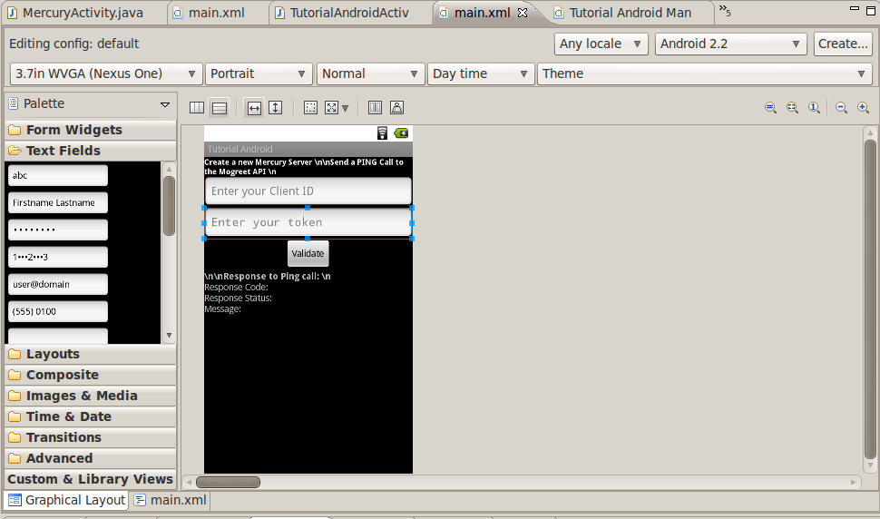
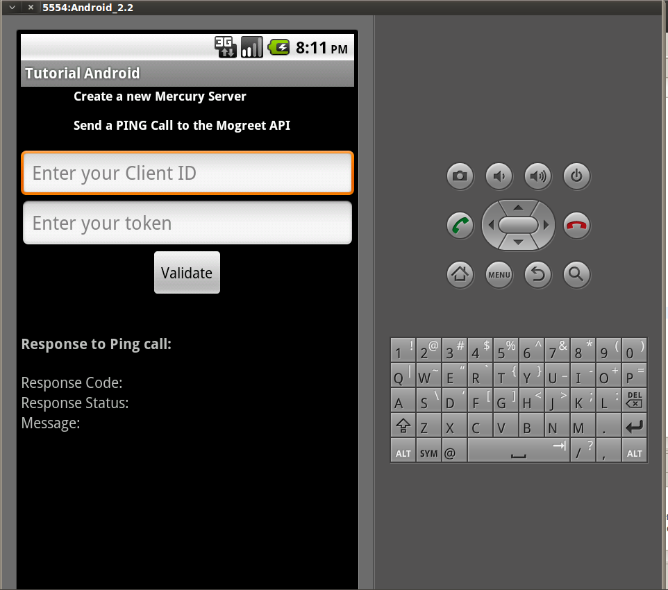

This tutorial is for those who want to learn how to use the Mogreet SDK called Mercury on the Android Platform. I recommand you to work with the Eclipse IDE to program with the Android SDK as well as this IDE is recommanded by Google itself. You can download the Android SDK here. After the Android setting up on Eclipse, we can start the tutorial !
Below, we will see how to establish a connection with the Mogreet API servers and, for example, we will do a PING call the Mogreet API.
After opening the IDE, you have to create a new Android project: Go to File -> New -> Android Porject. Here you will enter the name of your project and the version of the Android SDK you want (a version superior or equal to 2.2). As you can see below, you also have to enter the name of the package. I advise you to put a name like 'com.xxxxx' or 'android.xxxxx'.
Now we are almost ready to begin our first Android application using the Mogreet SDK. On your left, you will find all the packages corresponding to your project. You will have access to the source files, the pictures for your project, or the XML files useful to manage the Graphical User Interface (GUI). Now open the Activity if not, and run (Ctrl+F11) your project to see the virtual Android device in action! For the moment the only thing that is display is a 'Hello world' with the name of attached class. We will see later how to build a better interface.
Two steps left before starting the Android application. We have to download and add the Mercury librairy in order to make API calls. First of all, you have to download Mercury on Github and save it in a directory you should remember. Then, you have to go to Project -> Properties and select Java Build Path. Finally go to the "Librairies" tab if it is not already selected and click on Add External Jar. Now you can select the mogreetSDKAndroid.jar in the Android Mercury SDK folder. Alrigth, now you are ready to code. Let us do it !
It is time to create our application. In the project browser (on your left), select main.xml in the res/layout folder. In order to create a new Mercury server and do a PING call we have to collect two important data from the user: his client ID and his token. Therefore, we will use two EditView. To validate the Ping call, a Button has to be added. We shall also get the data from the XML file generated by the API so we are going to put three TextView. Do not forget to put an id when you are creating objects for the graphical interface.
See the XML code below, to create the interface or you can also use widget toolkit by selecting the other tab "Graphical Layout" (picture 1):
<?xml version="1.0" encoding="utf-8"?>
<LinearLayout xmlns:android="http://schemas.android.com/apk/res/android"
android:orientation="vertical"
android:layout_width="fill_parent"
android:layout_height="fill_parent"
>
<LinearLayout
android:orientation="vertical"
android:layout_width="fill_parent"
android:layout_height="fill_parent"
android:scrollbars="vertical"
android:id="@+id/Ping">
<TextView
android:text="Create a new Mercury Server \n\nSend a PING Call to the Mogreet API \n"
android:textColor="#ffffff"
android:textSize="12sp"
android:textStyle="bold"
android:id="@+id/pingCall"
android:layout_width="wrap_content"
android:layout_height="wrap_content"
android:layout_gravity="center_horizontal">
</TextView>
<EditText
android:id="@+id/clientID"
android:layout_width="fill_parent"
android:layout_height="wrap_content"
android:hint="Enter your Client ID"
android:maxLines="1">
</EditText>
<EditText
android:id="@+id/token"
android:layout_width="fill_parent"
android:layout_height="wrap_content"
android:hint="Enter your token"
android:password="true"
android:maxLines="2">
</EditText>
<Button
android:id="@+id/valid"
android:layout_width="wrap_content"
android:layout_height="wrap_content"
android:layout_gravity="center_horizontal"
android:text="Validate">
</Button>
<TextView
android:id="@+id/rep1"
android:layout_width="wrap_content"
android:layout_height="wrap_content"
android:textStyle="bold"
android:text="\n\nResponse to Ping call: \n">
</TextView>
<TextView
android:id="@+id/repcode"
android:layout_width="wrap_content"
android:layout_height="wrap_content"
android:text="Response Code: ">
</TextView>
<TextView
android:id="@+id/repstatus"
android:layout_width="wrap_content"
android:layout_height="wrap_content"
android:text="Response Status: ">
</TextView>
<TextView
android:id="@+id/repmess"
android:layout_width="wrap_content"
android:layout_height="wrap_content"
android:text="Message: ">
</TextView>
</LinearLayout>
</LinearLayout>
 
Now back to the code. Open the Activity file. We have to create the button, textFields and TextViews in order to interect with interface. Do not forget to add the Mercury librairy (android.mogreet.Mercury). In order to connect the button created thanks to the code the activity and the button in the XML, you have to use the findViewById method to get the ID you gave to your object.
final EditText textToken = (EditText) findViewById(R.id.token);You have to add a 'listner' to the button in order to create the Mercury server and the Ping call when the user will click on it. When it is done, you will collect the client ID and the token thanks to the TextFields:
token = textToken.getText().toString(); clientid = Integer.parseInt(textClientID.getText().toString());You can, now, create the Mercry server using the two parameters (token, clientid). In order to send a PING call to the Mogreet API, you have to call the ping() method from the Mercury object. Through this operation, you can now get the attributs of the XML corresponding to the Ping call using the getters of the Ping object.
Mercury newMercury = new Mercury(clientid, token);
Ping myping = newMercury.ping();
text00.setText("Response Code: "+myping.getResponseCode());
text01.setText("Response Status: "+myping.getResponseStatus().toUpperCase());
text02.setText("Message: "+myping.getMessage().toUpperCase()+"\n...connection established...");
This is the whole code of the application with the final rendering:
package com.mogreet.tutorial;
import android.app.Activity;
import android.mercury.Mercury;
import android.mercury.system.Ping;
import android.os.Bundle;
import android.view.View;
import android.view.View.OnClickListener;
import android.widget.Button;
import android.widget.EditText;
import android.widget.TextView;
public class TutorialAndroidActivity extends Activity {
private int clientid;
private String token;
/** Called when the activity is first created. */
@Override
public void onCreate(Bundle savedInstanceState) {
super.onCreate(savedInstanceState);
setContentView(R.layout.main);
//Creation of the texfields and textView
final EditText textClientID = (EditText) findViewById(R.id.clientID);
final EditText textToken = (EditText) findViewById(R.id.token);
final TextView text00 = (TextView) findViewById(R.id.repcode);
final TextView text01 = (TextView) findViewById(R.id.repstatus);
final TextView text02 = (TextView) findViewById(R.id.repmess);
((Button)findViewById(R.id.valid)).setOnClickListener(new OnClickListener() {
@Override
public void onClick(View arg0) {
//Collecting the token and client ID for creating a Mercury Object.
token = textToken.getText().toString();
clientid = Integer.parseInt(textClientID.getText().toString());
//Creation of a new Mercury for the whole application.
Mercury newMercury = new Mercury(clientid, token);
//Creation of a new PING call.
Ping myping = newMercury.ping();
//Collecting the data from the API call.
text00.setText("Response Code: "+myping.getResponseCode());
text01.setText("Response Status: "+myping.getResponseStatus().toUpperCase());
text02.setText("Message: "+myping.getMessage().toUpperCase()+"\n...connection established...");
}
});
}
}
<uses-permission android:name="android.permission.INTERNET" />
It is done, you are now an Android programmer. Congrats! You can now use the different API calls to make an application useful like sending MMS or an analytic tool for the trafic on your phone. You can also use the INFO, SEND or LOOKUP call to create new applications like this one to train. I invite you to see the Javadoc about Mercury for Android to be more comfortable with this SDK.